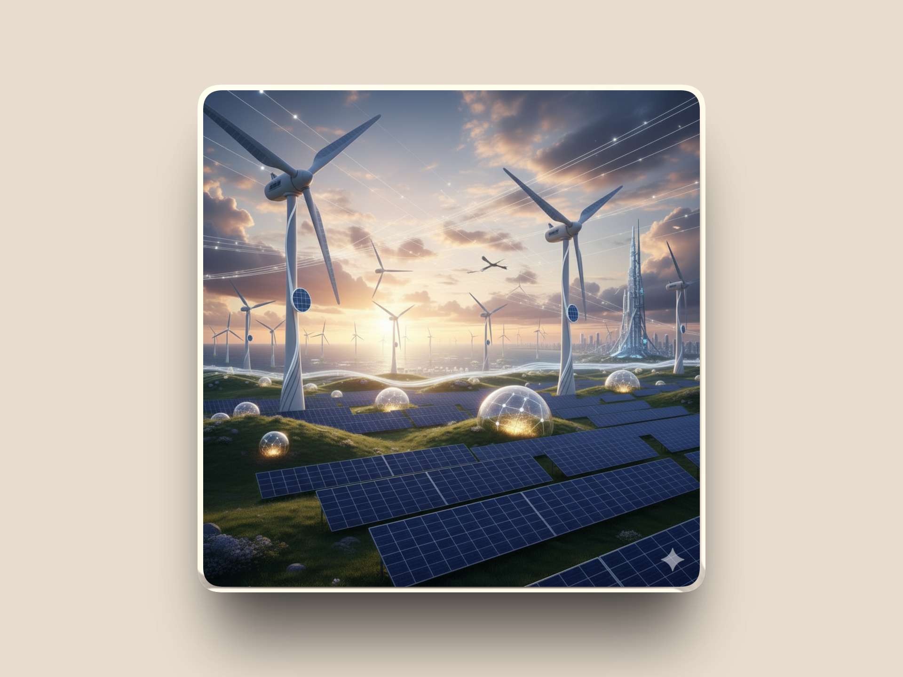

Explorando las oportunidades energéticas sostenibles en el Caribe colombiano
El departamento del Magdalena, ubicado en la Región Caribe, se destaca por su abundante radiación solar y su cercanía a corredores de viento del norte del país. Estas características lo convierten en un territorio estratégico para impulsar proyectos de energía solar fotovoltaica y energía eólica, contribuyendo así a la transición energética en Colombia.
Con una combinación de zonas urbanas, rurales y costeras, el Magdalena ofrece un entorno diverso para el desarrollo de iniciativas energéticas limpias, fortaleciendo tanto la economía como la sostenibilidad ambiental.
El Magdalena recibe entre 5.0 y 5.5 kWh/m² de radiación solar diaria, valores superiores al promedio nacional. Esto permite:
Municipios destacados: Santa Marta, Ciénaga, Zona Bananera, Aracataca, El Retén y Fundación.
La zona costera del Magdalena presenta velocidades de viento entre 6 y 8 m/s, aptas para la generación eólica. Las áreas con mayor potencial incluyen:
La interacción entre la brisa marina y la estabilidad térmica de la región favorece la operación de sistemas de generación renovable. Su localización frente al Mar Caribe proporciona condiciones óptimas para proyectos energéticos presentes y futuros.
El departamento integra zonas montañosas, planicies y áreas abiertas, permitiendo la implementación de soluciones híbridas como:
El Magdalena posee comunidades rurales que aún no están conectadas al Sistema Interconectado Nacional. Esto representa una oportunidad para:
El departamento presenta una alta demanda debido al desarrollo turístico, agrícola y comercial. Las energías renovables pueden contribuir a disminuir costos operativos y ofrecer mayor estabilidad eléctrica.
El Magdalena mantiene temperaturas constantes entre 28°C y 32°C y baja variabilidad estacional, lo que garantiza una generación energética predecible y confiable.
Las soluciones solares y eólicas reducen el costo de acceso a la energía para hogares subsidiados.
Esto mejora su capacidad de destinar ingresos a salud, educación y alimentación.
Fuente: Agencia Internacional de Energía (IEA), 2023.
Las comunidades no interconectadas (ZNI) reciben una alternativa real frente a plantas diésel
costosas y contaminantes. Los sistemas renovables permiten continuidad del servicio,
mayor autonomía y desarrollo comunitario.
Fuente: Ministerio de Minas y Energía de Colombia – Informe ZNI 2023.
La implementación de proyectos solares y eólicos genera empleos directos e indirectos en instalación,
operación, mantenimiento y manufactura local.
Fuente: Banco Interamericano de Desarrollo (BID), “Empleo en Energías Renovables”, 2022.
Al involucrar a las comunidades en el diseño y gestión de los proyectos, aumenta la cohesión social,
la apropiación del territorio y la participación en decisiones energéticas.
Fuente: Programa de Naciones Unidas para el Desarrollo (PNUD), 2022.
Con energías renovables, los usuarios consumen menos energía de la red tradicional, reduciendo
el valor subsidiado que deben cubrir municipios y el Estado. Esto libera recursos para inversión social.
Fuente: Ministerio de Minas y Energía de Colombia – Estadísticas FSRI/FOES 2023.
La sustitución de diésel en zonas aisladas y la reducción de consumo en redes urbanas disminuyen
significativamente las emisiones de CO₂ y material particulado, mejorando la salud pública.
Fuente: Organización Mundial de la Salud (OMS), Reporte Calidad del Aire 2023.
La adopción de sistemas inteligentes, medidores modernos e infraestructuras descentralizadas impulsa
la transición energética e integra a los territorios a estándares globales.
Fuente: Banco Mundial, “Modernización de Infraestructuras Energéticas”, 2023.
La implementación de energías renovables en el Magdalena trae múltiples beneficios sociales, entre ellos:
Aquí podrás calcular cuánto está ahorrando tu departamento con nuestra solución:
Ajusta los valores al costo real en tu región.
Factura Mensual Actual: $0
Nuevo Consumo Estimado: 0 kWh
Nueva Factura Estimada: $0
Ahorro Mensual Total: $0
Ahorro Anual Proyectado: $0
Actualmente, los fondos FSRI (Fondo de Solidaridad para Subsidios y Redistribución del Ingreso) y FOES (Fondo de Energía Social) destinan grandes recursos para subsidiar el consumo energético de comunidades vulnerables. Estos subsidios deben ser cubiertos por los municipios y el Ministerio de Minas y Energía, incrementando costos cada año.
Al implementar soluciones de energía renovable —como sistemas solares o eólicos— se reduce el consumo de energía tradicional, lo que disminuye el monto a subsidiar y, por tanto, el gasto público total.
El proyecto plantea la formación de una empresa municipal asociada con la Nación, financiada inicialmente con los recursos hoy destinados a subsidios. Este modelo reinvierte el dinero en infraestructura energética propia, garantizando que los beneficios económicos permanezcan en el territorio.
Se busca un esquema público-tecnológico que asegure autosostenibilidad financiera y crecimiento progresivo.
La administración de la empresa puede ser gestionada por sistemas basados en Inteligencia Artificial, permitiendo:
Aunque el proyecto se inicia con energía solar por su viabilidad, bajo costo y facilidad de implementación, está diseñado para expandirse progresivamente hacia otras fuentes renovables, tales como:
La implementación de esta propuesta permite alcanzar múltiples beneficios para la región y el país: